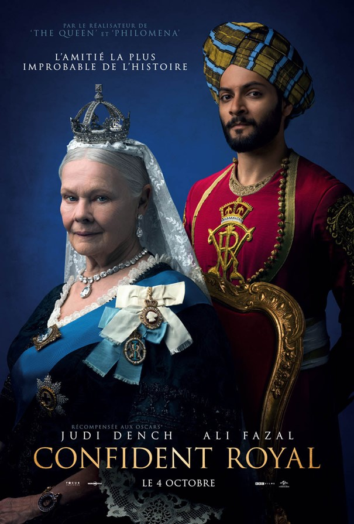

<section class="article-netflix py-5">
  <div class="container">
    <div class="row">
      <article class="">
        <h2>Victoria et Abdul</h2>
        <h5>Un jeune candide indien se lie d'amitié avec la reine victoria, 2 novembre 2020</h5>

        <p>
          Pour un public de plus de 13 ans - durée 1h54
        </p>

        <p>
          Voici une critique argumentée de ce programme. J'aime les films et séries historiques, avec faits rééls. Dans ce cas précis, c'est encore mieux. J'ai été servi par cette tendre et bouleversante histoire : Victoria & Abdul.
        </p>

        <div class="article_img">
          
        </div>

        <p>
          <strong class="emphase">Le Pitch: </strong> Confident royal est un film biographique américano-britannique réalisé par Stephen Frears, sorti en 2017. Le film s'inspire librement de l'histoire vraie de la relation entre la Reine Victoria et son serviteur indien Mohammed Abdul Karim, auquel elle accorde de nombreux honneurs au grand dam des membres de la cour.
        </p>

        <p>
          <strong class="emphase">Mon avis: </strong> Ce film fait la lumière sur un épisode de l’Histoire de la famille royale britanique longtemps oublié, voir occultée volontairement car dérangeante pour les puristes de la couronne .
          <br>
          En 1887, la reine Victoria qui s'ennuie à mourir, se prend d’affection pour Abdul Karim, un valet indien, et lui offre une place de choix dans son cercle restreint. Cela, malgré la méfiance de sa famille. Une affaire d’État entre raison et sentiments. A l'époque la courronne britanique régnait sur 1/3 de la planete avec ses colonies. En Inde il existait 2 grandes mouvances dans la population les hindous et les musulmans. Abdul est musulman et prone une vision de paix, de fraternité et de concorde pour l'Inde ce qui séduit la reine Victoria lors de la remise officielle par Abdul Karim envoyé fraichement de son pays natal pour remettre le cadeau royal à Victoria impératrice des Indes.
          <br>
          Cette relation est jugée "contre nature politique" par la cour de la reine qui dénonce vertement le fait qu'Abdul ne soit pas blanc et soit de surcroit, de confession musulmane. Cela était inadmissible à l'époque des convenances cintrées du pays et du siècle. Victoria impose d'autorité Abdul et lui demande même de lui apprendre sa langue et sa culture en devenant son professeur particulier. S'enchaine une belle relation de bienveillance, de respect, de compréhension des différences qui fondent le royaume d'angleterre ou toutes les informations ne remontent pas jusqu'à la reine et pour cause, la reine ne devais pas savoir qu'elle est détestée par une partie de son royaume.
          <br>
          Abdul, tisse jour après jour, une relation de conseiller spirituel et déverse sur la reine tout son savoir de l'Inde et sa bonté naturelle. Victoria sentant proche sa fin de vie et en ayant ras le bol de ses obligations à la cour se laisse bercer par le vécu et la lumière que dégage naturellement Abdul. On passe du rire aux larmes, de la bienveillance à la méchanceté des courtisans officiels de la reine jaloux et racistes.
          <br>
          Rajoutez à cette histoire, les senteurs, couleurs, lumières, monuments et énergie de l'Inde versus l'austérité de l'Angleterre avec des images très descriptives et le tableau est complet. Il vous emporte durant 1h50 palpitantes de complicité affectueuse mais interdite.
          <br>
          Ce film relatant un fait de plus de 2 siècles déjà, nous rappelle qu'aujourd'hui rien n'est réglé sur les différences (origines, cultures, croyances) qui divisent la planète et nous renferment de plus en plus derrière des barbelés et miradores de la discorde.
        </p>

        <p>
          <strong class="emphase">Conclusion: </strong> Bravo au réalisateur, Stephen Frears, d'avoir remonté cette histoire cachée volontairement et de nous avoir conté cette belle histoire entre une puissante reine et un sans-grade indien.
          <br>
          Moi, j'ai aimé me laisser prendre à cette histoire vraie aux sentiments humanistes et sincères.
        </p>

        <iframe width="560" height="315" src="https://www.youtube.com/embed/G46-fA4SYiA" frameborder="0" allow="accelerometer; autoplay; clipboard-write; encrypted-media; gyroscope; picture-in-picture" allowfullscreen></iframe>

        <p class="signature text-end"><strong>Charly</strong></p>
      </article>

    </div>

  </div>

</section>


